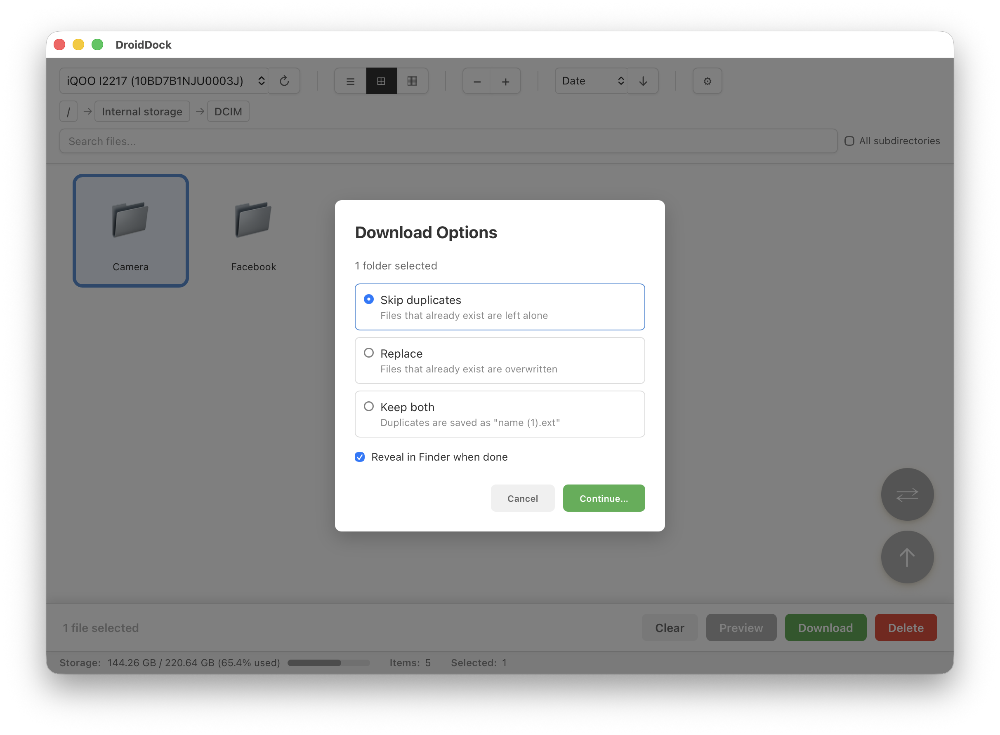
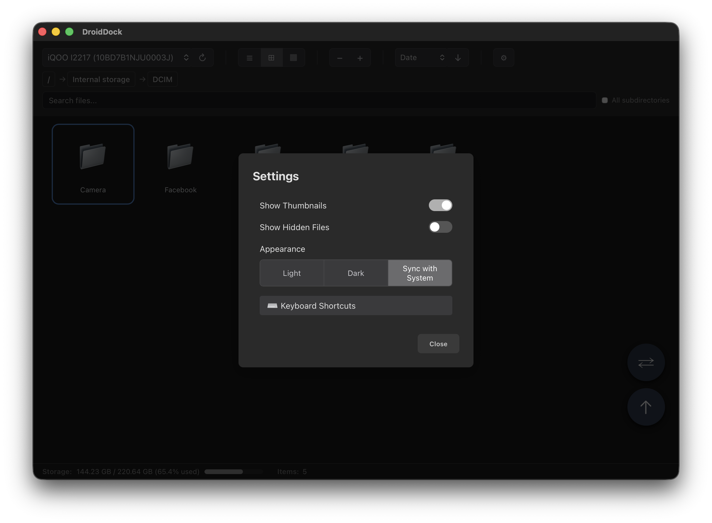

What's New in v0.5.0
Recursive Folder Download
Download entire folders from your device, including all subfolders, with per-download conflict handling — skip duplicates, replace, or keep both as separate files.
Settings Modal & Appearance Control
Settings moved from a dropdown to a modal dialog, opened by clicking the gear icon or pressing Cmd + ,. Dark mode is now a three-way appearance control:
- Light — always use the light theme
- Dark — always use the dark theme
- Sync with System — follow your Mac's appearance setting live
Folder Selection in All View Modes
Folders can now be selected alongside files in Table, Grid, and Column view for batch download and delete operations.
Dark Mode Fixes
- Fixed a CSS bug where the global dark-mode text/background fallback silently never applied, leaving black text on the settings shortcuts button, sync pattern chip buttons, and download options dialog
- Neutralized dark-mode toolbar colors to match native Finder grays
- Aligned list/grid view and file preview styling with native Finder look and feel
Other Fixes
- Recursive folder listing now tolerates permission-denied subdirectories instead of failing the whole operation
Screenshots

Recursive Folder Download
Download entire folders with per-download conflict handling

Settings & Appearance
New settings modal with Light/Dark/Sync with System control
Download
macOS 10.15+ • Universal Binary (Apple Silicon + Intel)
Or install via Homebrew:
brew tap rajivm1991/droiddock && brew install --cask droiddock
Full Changelog
v0.5.0 - July 2026
Added
- Recursive folder download with per-download conflict handling (skip/replace/keep both)
- Folder selection in all view modes (Table, Grid, Column)
- Settings modal with Light/Dark/Sync with System appearance control, opened via Cmd+,
Fixed
- Recursive folder listing now tolerates permission-denied subdirectories
- Neutralized dark-mode toolbar colors to match native Finder grays
- Fixed global dark-mode text/background fallback that silently never applied, causing black text in several places
- Aligned list/grid view and preview styling with native Finder
Support the Developer
DroidDock is free and open-source, built by one developer in their spare time. If it saves you time, a small donation means a lot!
☕ Buy Me a Coffee via PayPal